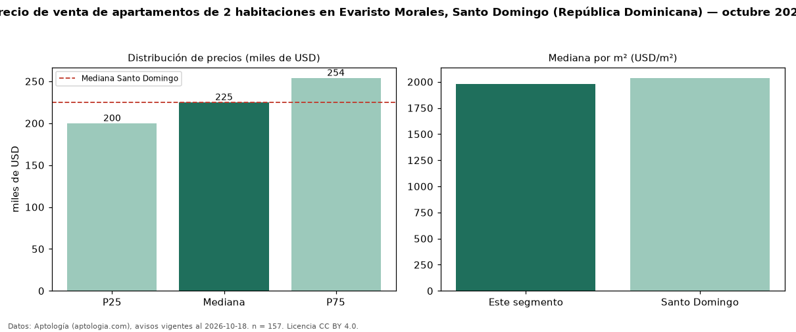

Precio de venta de apartamentos de 2 habitaciones en Evaristo Morales, Santo Domingo (República Dominicana) — octubre 2026
Con 157 avisos vigentes, el precio mediano de apartamentos de 2 habitaciones en venta en Evaristo Morales, Santo Domingo (República Dominicana) es USD 225.000. Prácticamente coincide con la mediana de Santo Domingo para apartamentos de 2 habitaciones (USD 225.000). Por metro cuadrado, la mediana es USD 1.979/m² (n = 150 avisos con área), 3 % por debajo de Santo Domingo (USD 2.037/m²). Son 42 % de los 370 avisos de apartamentos en venta de la zona, cuya mediana general es USD 227.000 (−1 %). Con el precio por m² de alquiler del mismo segmento (USD 10,27/m² al mes), la rentabilidad bruta implícita es 6,2 % anual (aproximación con medianas de ofertas distintas). El área mediana anunciada es 116 m². La mitad central de los avisos va de USD 199.900 a USD 254.000 (razón 1,3), una dispersión baja. Datos: Aptología (aptologia.com), CC BY 4.0 — https://www.aptologia.com/do/venta/santo-domingo/evaristo-morales. Archivos: PDF, CSV con las cifras y gráfica PNG.

| Avisos únicos | 157 |
|---|---|
| Percentil 25 | COP 199.900 |
| Mediana | COP 225.000 |
| Percentil 75 | COP 254.000 |
| Mediana por m² | COP 1.978 |
Fuente: avisos vigentes de portales inmobiliarios recopilados por Aptología, deduplicados (mínimo 30 avisos únicos por celda). Precios pedidos, no cerrados. Fecha: 2026-10-18.